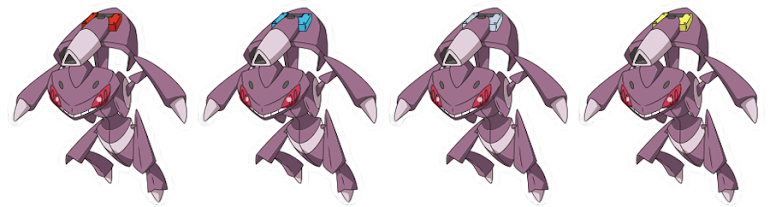

.png)
.png)
Os Pokémon Míticos são considerados os Pokémon mais misteriosos e raros de todos, e muitas pessoas duvidam de sua existência. No Japão, a nomenclatura dada aos Pokémon Míticos existe desde a primeira geração, enquanto no ocidente isso passou a ser usado a partir de Pokémon Black e White (2010). Até então, estes Pokémon eram considerados apenas como "Pokémon Lendários". Normalmente, os Pokémon Míticos não podem ser obtidos a partir da história dos jogos principais e são distribuídos aos jogadores a partir de eventos específicos. Alguns Pokémon Míticos são revelados, inclusive, apenas após um certo tempo do lançamento de um jogo. Algumas características que estes Pokémon compartilham são:
Arceus é um Pokémon Mítico de tipo Normal da região de Sinnoh. É descrito na mitologia como o Pokémon Divino que criou o universo. Arceus nasceu de um ovo que veio de algum lugar, antes do universo existir, e moldou o planeta com seus mil braços. Ele é frequentemente citado nas escrituras como o "Ser Original". Arceus possui 19 Plates, que o permite controlar cada aspecto da existência, além de alterar seu tipo com sua habilidade Multitype.
Celebi é um Pokémon Mítico de tipo Psíquico e Planta da região de Johto. Venerado como o guardião da floresta, Celebi aparece sempre onde belas florestas existem. Ele tem o poder de viajar no tempo, mas surge apenas em tempos de paz. Quando Celebi desaparece nas profundezas de uma floresta, diz-se que deixou para trás um ovo que trouxe do futuro.
Darkrai é um Pokémon Mítico de tipo Sombrio da região de Sinnoh. Ele persegue as pessoas e os Pokémon causando-lhes profundos pesadelos. Darkrai pode fazer o seu corpo se tornar um vulto no chão e se locomover neste estado. Possui pernas retráteis, escondendo-as ao voar.
Hoopa é um Pokémon Mítico de tipo Psíquico e Fantasma em sua forma Confinada, e de tipo Psíquico e Sombrio em sua forma Liberta. Hoopa foi descoberto na região de Kalos. Este encrenqueiro envia tudo e qualquer coisa para lugares distantes usando seu anel, que pode deformar o espaço. Ele reúne as coisas que gosta e as leva através de seu anel para transportá-las a um lugar secreto.
Usando o item Prison Bottle, Hoopa pode assumir a sua forma Liberta por três dias. Na sua verdadeira forma, possui uma enorme quantidade de energia. Lendas de sua avareza dizem como uma vez levou um castelo inteiro para ganhar o tesouro escondido dentro dele. Dizem ser capaz de agarrar tudo o que deseja com seus seis anéis e seis braços enormes. Seu poder era tanto que as pessoas da época acharam melhor selar esse poder num recipiente especial.
Mew é um Pokémon Mítico do tipo Psíquico da região de Kanto. Acredita-se que este Pokémon possui os códigos genéticos de todos os Pokémon em seu DNA. Inicialmente pensava-se que Mew estava extinto, mas uma equipe científica relatou avistamentos de Mew na Guiana. Mewtwo foi criado após uma série de experimentos baseados em Mew.
Deoxys é um Pokémon Mítico de tipo Psíquico da região de Hoenn. Um vírus alienígena que caiu na terra em um meteoro passou por uma mutação de DNA para se tornar este Pokémon. O órgão cristalino em seu peito é aparentemente o seu cérebro. Deoxys consegue alterar sua estrutura celular para mudar de forma, podendo se tornar mais forte, mais resistente ou mais rápido.

Deoxys é um Pokémon Mítico de tipo Psíquico da região de Hoenn. Um vírus alienígena que caiu na terra em um meteoro passou por uma mutação de DNA para se tornar este Pokémon. O órgão cristalino em seu peito é aparentemente o seu cérebro. Deoxys consegue alterar sua estrutura celular para mudar de forma, podendo se tornar mais forte, mais resistente ou mais rápido.
Jirachi é um Pokémon Mítico de tipo Aço e Psíquico da região de Hoenn. A cada mil anos, Jirachi desperta de seu sono durante uma semana. Quando Jirachi está desperto, ele pode realizar três desejos de uma pessoa a partir das três notas azuis pendendo em sua cabeça. Enquanto está adormecido, um casco duro e cristalino envolve seu corpo para protegê-lo de inimigos. Em sua barriga encontra-se o seu olho verdadeiro, que raramente é aberto.
Manaphy é um Pokémon Mítico de tipo Água da região de Sinnoh. Logo no começo de sua vida ele já tem um poder extraordinário que lhe permite criar vínculos com qualquer tipo de Pokémon. Ele tem o poder de trocar os corpos de pessoas e Pokémon. Manaphy é o único Pokémon Mítico que pode cruzar com Ditto para gerar um ovo de Phione. No entanto, Phione não pode evoluir para Manaphy apesar do seu parentesco.
Meltan é um Pokémon Mítico de tipo Aço introduzido originalmente em Pokémon GO. A região de origem deste Pokémon é desconhecida. A maior parte do corpo do Meltan é composta por metal líquido. Ele é capaz de usar os seus braços e pernas para corroer metal e absorvê-lo para o seu próprio corpo. Ele gera eletricidade utilizando o metal que absorve de fontes externas. Meltan utiliza esta eletricidade como fonte de energia e também como ataque, que pode ser desencadeado a partir do seu olho. Meltan é o único Pokémon Mítico que pode evoluir, e apenas no Pokémon GO, com 400 Doces de Meltan.
Melmetal é um Pokémon Mítico de tipo Aço introduzido originalmente em Pokémon GO. Na antiguidade, este Pokémon era venerado pelo seu poder de criar metais. Com a evolução, seu corpo endurece e fica incrivelmente robusto. A maior parte do seu corpo é composta por metal líquido. Seus braços são extremamente flexíveis e podem dar chicotadas para lançar golpes devastadores. Melmetal é o único Pokémon Mítico que possui uma forma Gigantamax.